Challenge
晨间任务常常同时发生，设备却把选择、等待、取用与清洁割裂在不同操作里。
智能硬件与交互设计 · 晨间生活系统
智能咖啡与轻早餐工作站。面向节奏紧张的晨间场景，把咖啡制作、早餐准备、保温和耗材维护组织成一条可理解、可协同的生活流程。
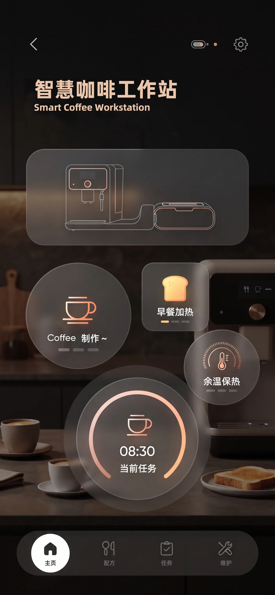
晨间任务常常同时发生，设备却把选择、等待、取用与清洁割裂在不同操作里。
完成用户痛点梳理、流程与交互架构、产品界面、工作站形态及细节表达。
用“晨间模式”串联咖啡、早餐和保温，把复杂参数收束为清晰的状态与下一步。
让工作站从单一咖啡设备转变为一个能配合生活节奏的轻早餐系统。
Design Position
晨序关注的不是增加更多功能，而是减少早晨的判断和等待。系统根据用户习惯提供一键选择，用进度、余温和提醒把设备状态说清楚，再把咖啡制作与早餐准备放进同一个时间节奏里。
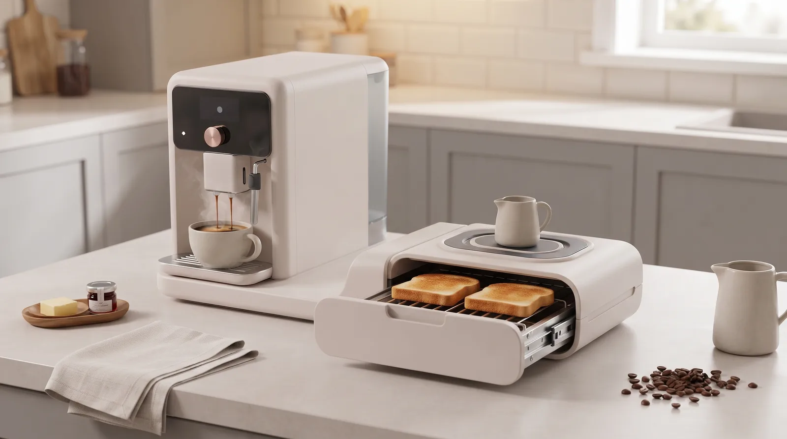
User Evidence
用户痛点从参数复杂、反馈不清晰，延伸到耗材管理、清洁负担和智能联动不稳定。设计机会因此从“加功能”转向“整理关系”。
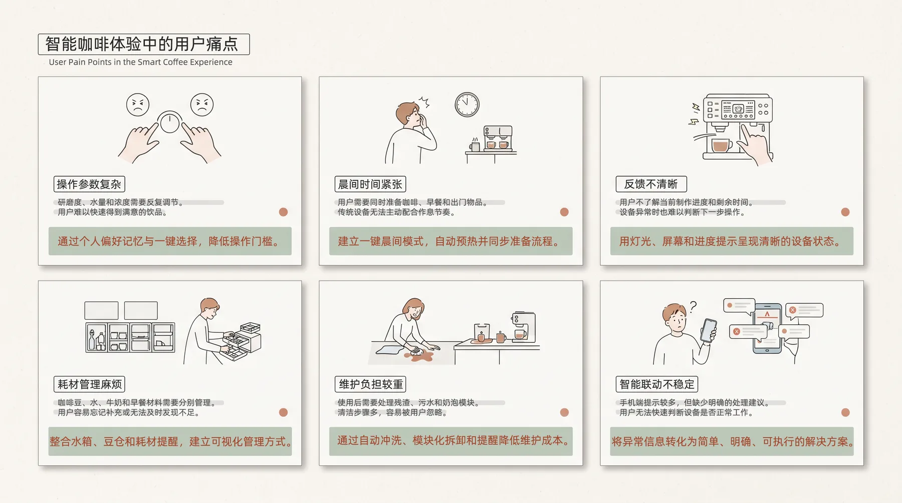
Morning Journey
从唤醒、选择、等待到协同和离开，设计把每一个接触点转化为可被提示、可被理解、可被继续的状态。
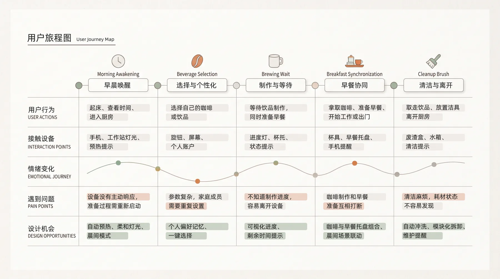
Interaction System
不同页面不是孤立的视觉稿，而是对应用户在晨间流程中的三个关键判断：我想做什么、现在进行到哪一步、接下来如何取用或调整。
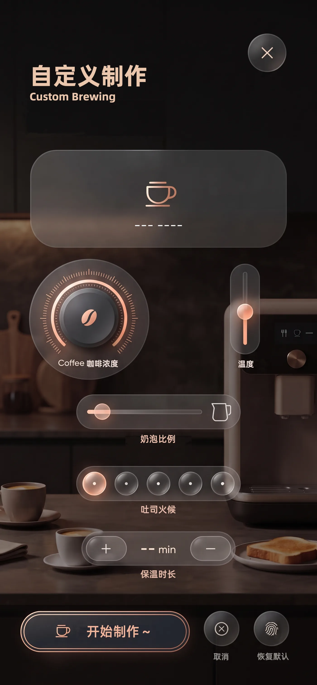
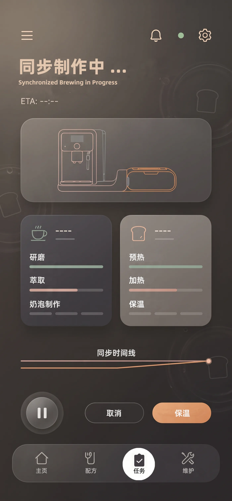
Product & Interface
实体工作站负责承载操作与收纳，界面负责解释状态与选择。圆角、柔和材质和橙绿提示色让设备更像晨间环境的一部分。
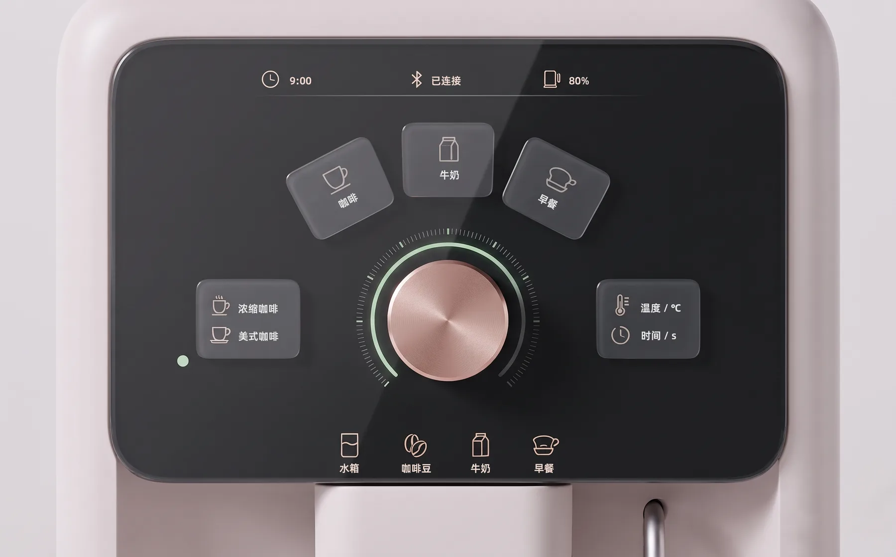
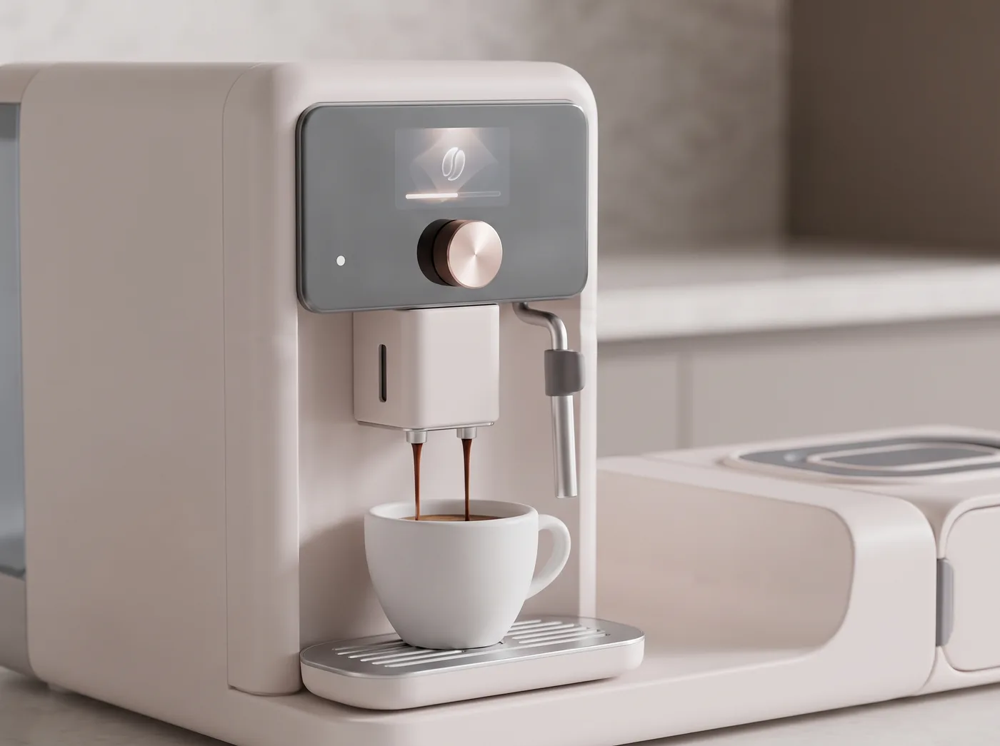
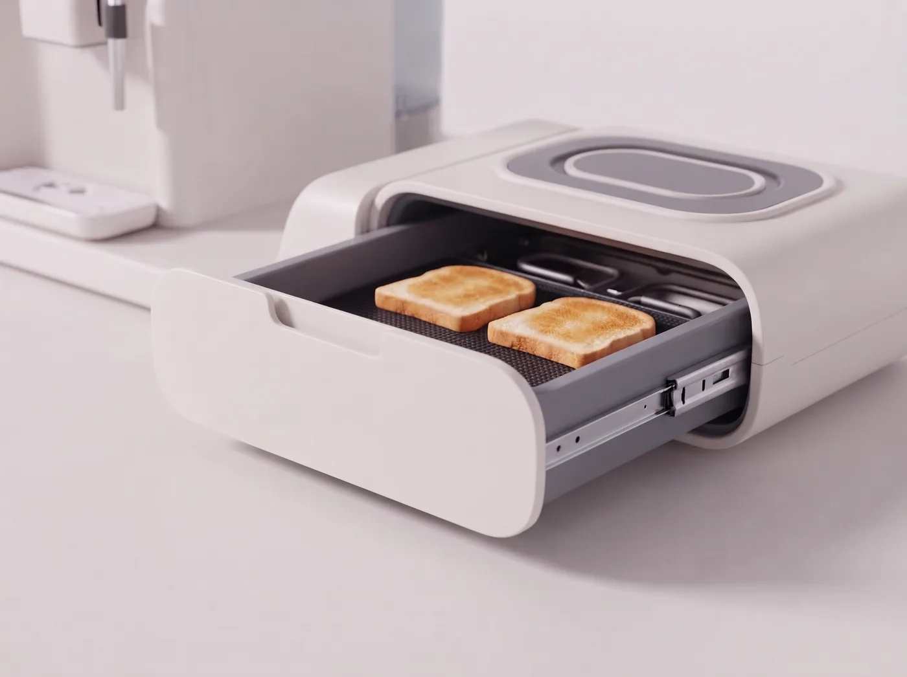
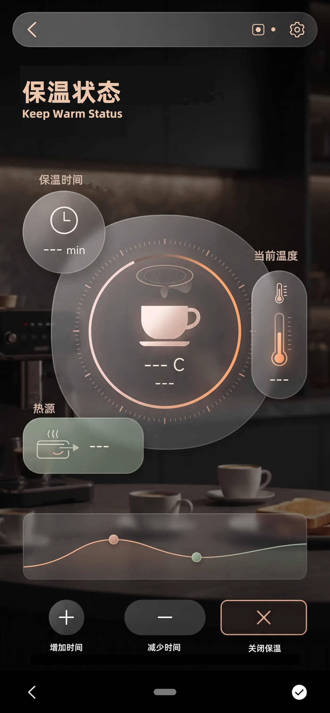
Closing State
保温页面将剩余时间、当前温度和热源状态放在同一个视觉层级中，减少用户反复确认的需要，也让“暂时离开”成为系统支持的一种生活节奏。
Form Development
最后回到产品本体：草图探索比例与模块关系，正视图确认工作区，细节图说明操作、清洁和收纳如何落地。
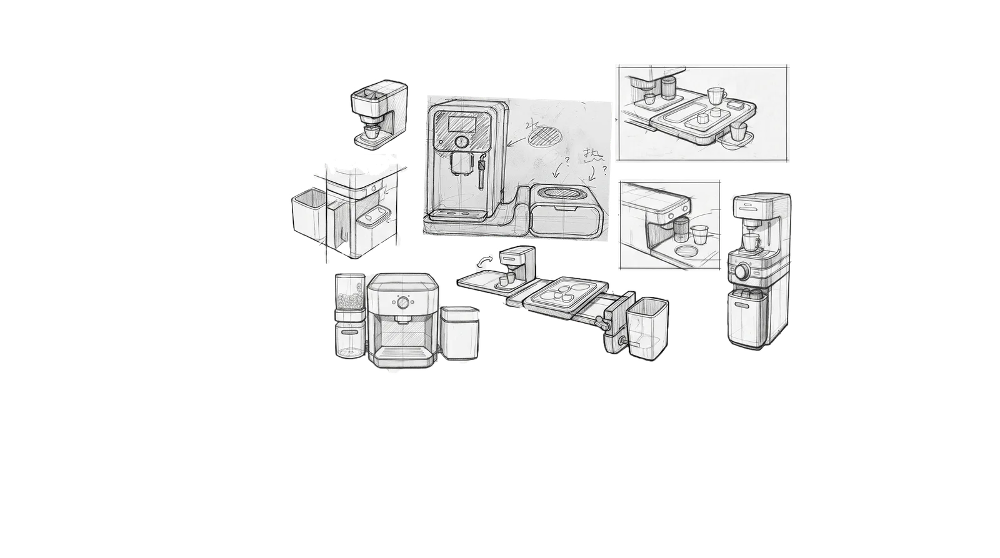
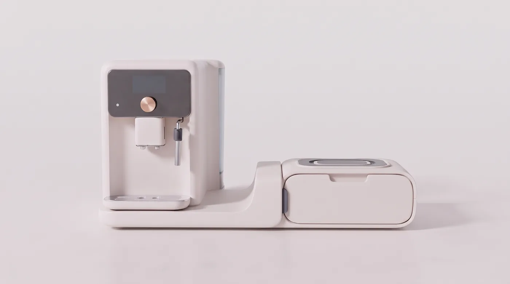